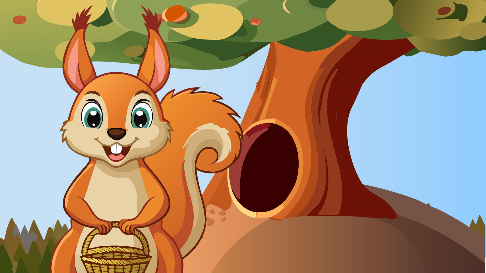

GRUNDLÆGGENDE ANIMATION
Tema 4 handlede om at animere. Her fik vi til opgave at skabe et simpelt spil, der havde nogle specifikke elementer, som inkluderede: gode/onde elementer, karaktere, forskellige skærme osv. Design processen var en vigtig del af spillet og jeg brugte derfor en del til i Adobe Illustrator, som jeg også senere kommer ind på. I Tema 4 fik kode en helt ny dimension, ift. Javascript som jeg længere nede på siden forklarer lidt mere om. Du kan se løsningen på mit animationsspil herunder, samt få et indblik i de forskellige dele af processen, der er dokumenteret på sitet.
ADOBE ILLUSTRATOR
Jeg har meget sparsom erfaring med Abobe Illustrator, da vi skal til at designe spillet. Der går derfor en del tid med at lære programmet at kende. Herunder kan du se to elementer fra spillet - karakteren "Sammy" og det gode element: agernet. For at teste alle sider af Illustrator af, testede jeg både at skabe noget fra bunde (agernet), samt prompte programmets AI funktion for at lære hvordan man designer med den (egernet Sammy). Gennem dette forløb lærde jeg meget om Adobe Illustration og læringskurven var stejl, og jeg er blevet tryg i programmet. Det har derfor været en super vigtig del af semesteret, at have haft et tema, hvor det har været essentielt at skabe en masse forskelligt i programmet.
JAVASCRIPT
Javascript var en anden stor del af processen fra ide til færdigt spil. Der var enormt mange nye ting jeg skulle sætte mig ind i. Det jeg kan sige med sikkerhed er at jeg har en bedre forståelse af hvad Javascript kan og lidt om hvordan man implementere det. Det er dog en del af min kompetenceramme der stadig er under stor udvikling. Jeg har lagt et screenshot ind af en del af min Javascript kode fra spillet, hvor man ser hvordan "start" funktionen er kodet.